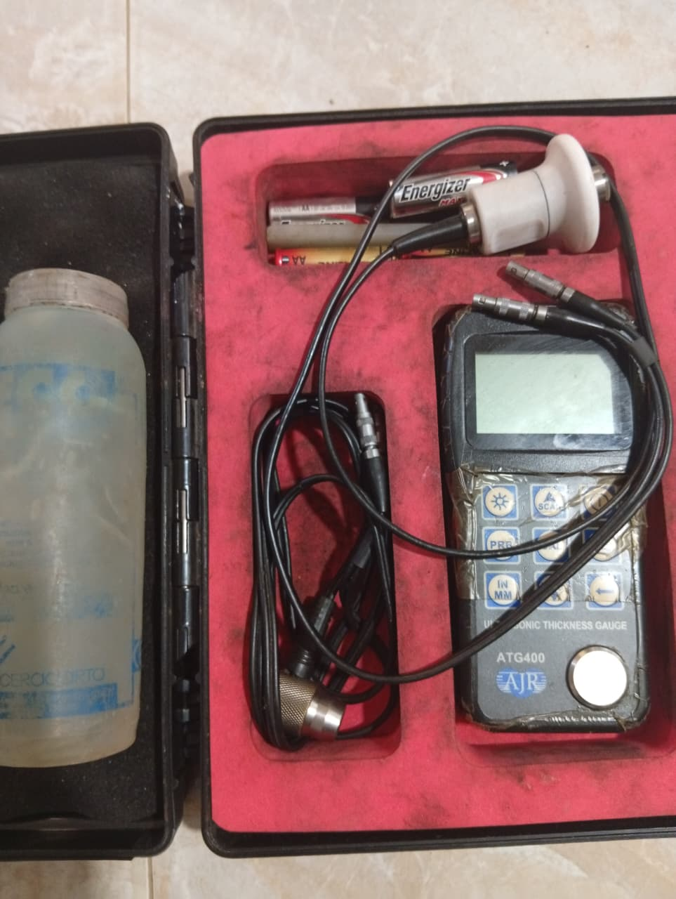
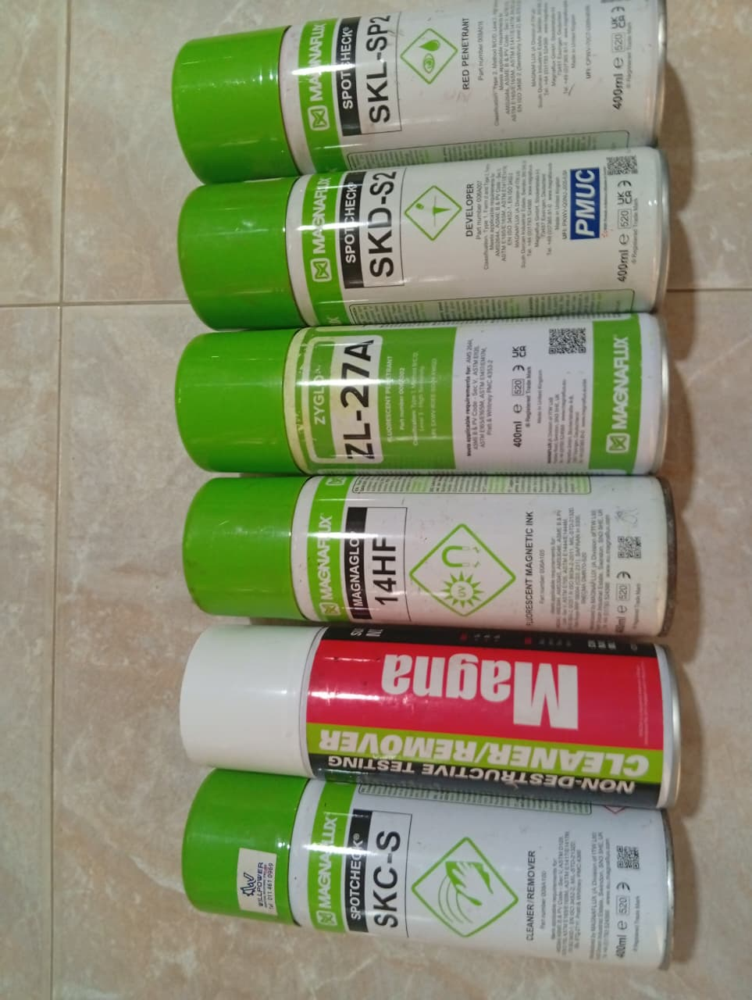
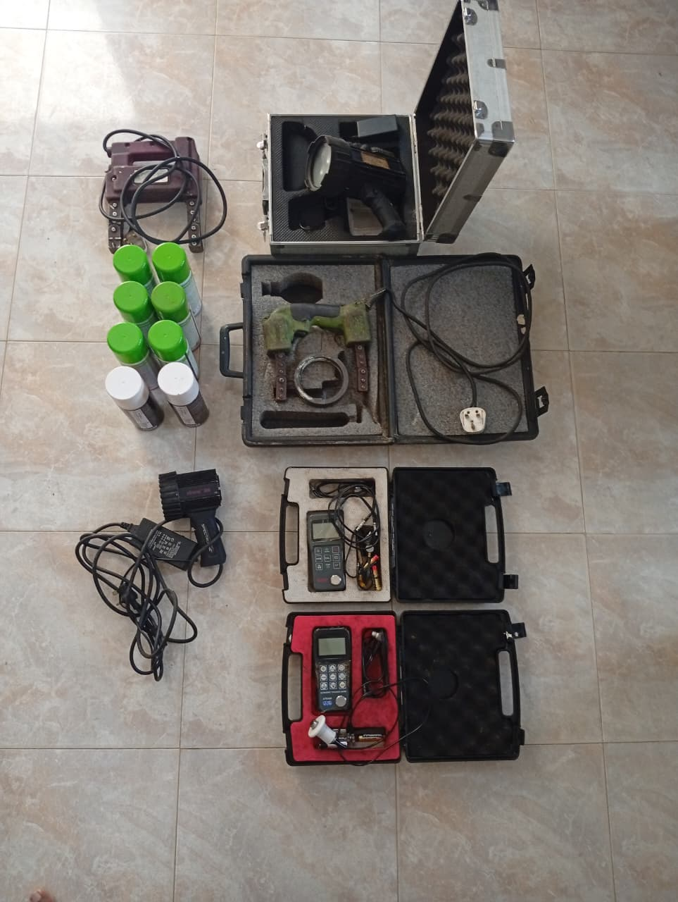
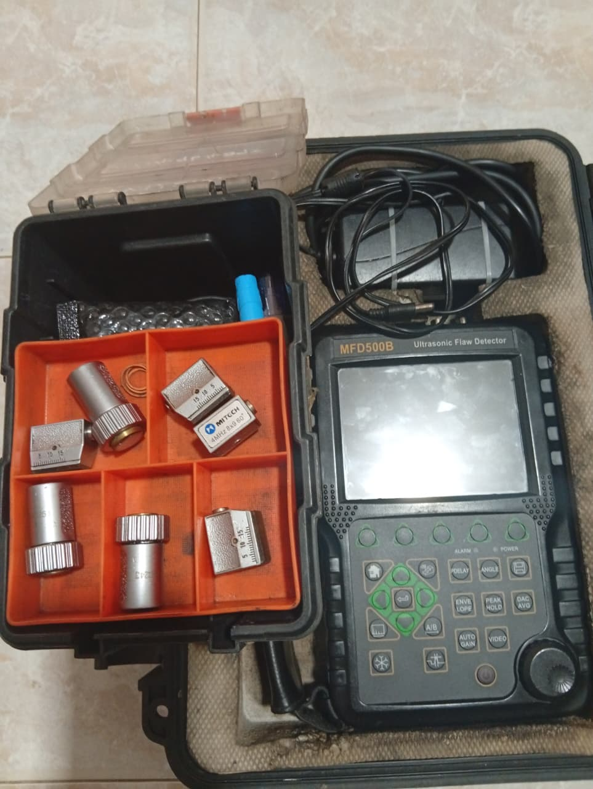
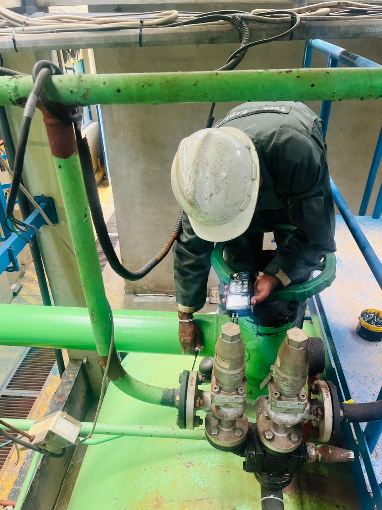
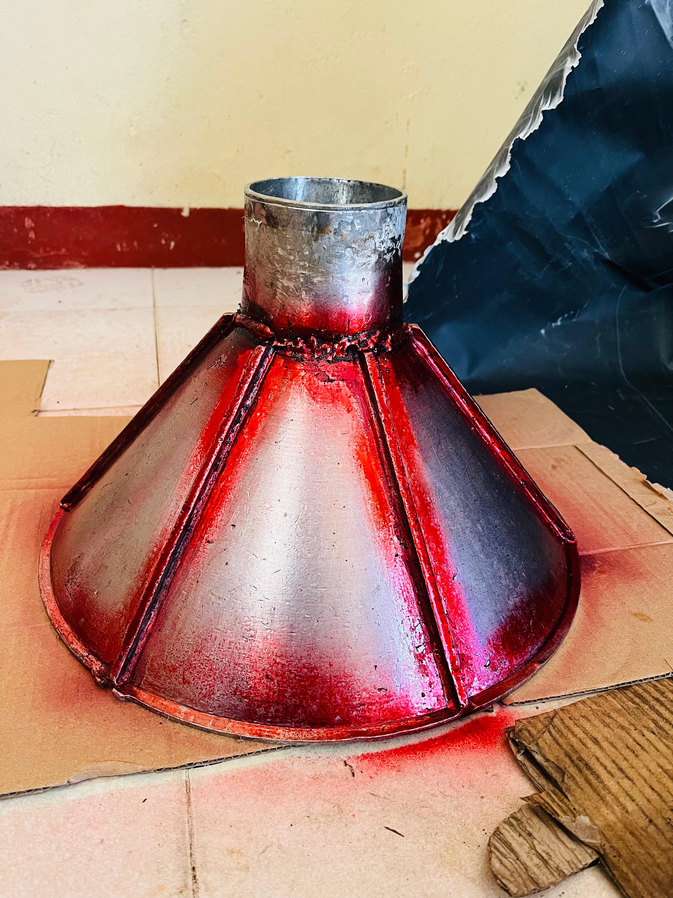
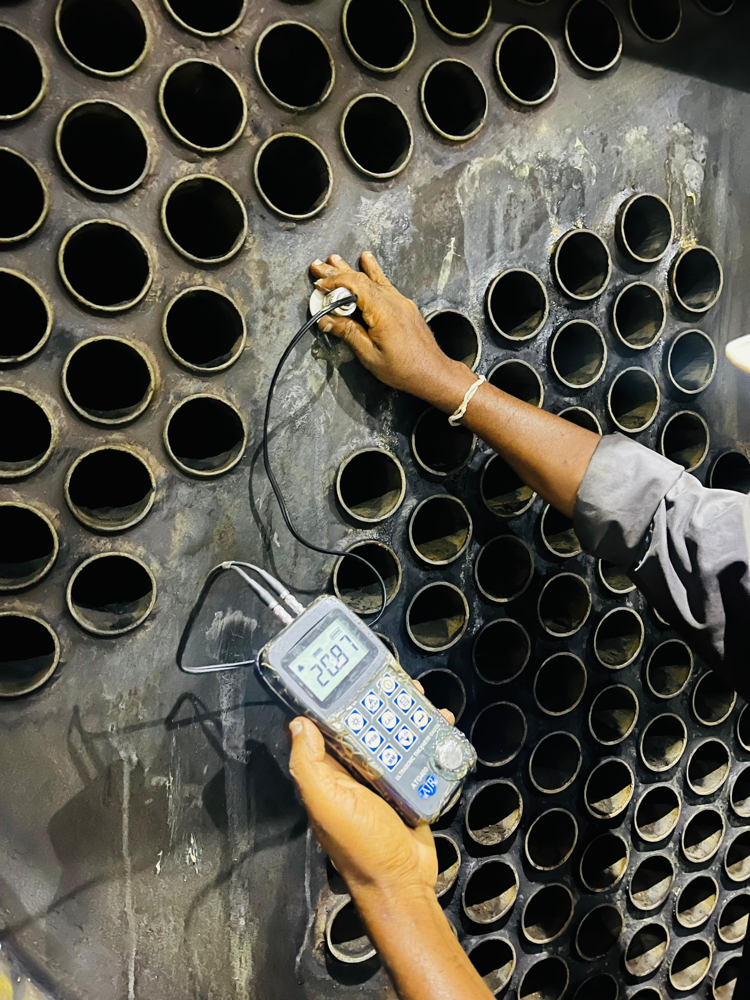
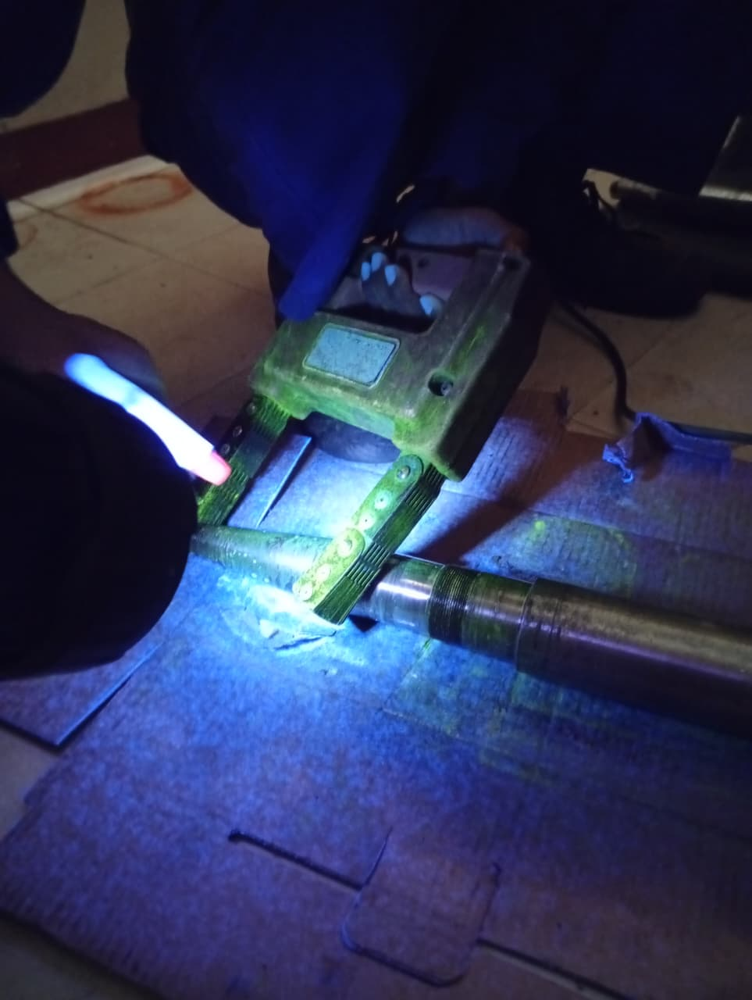
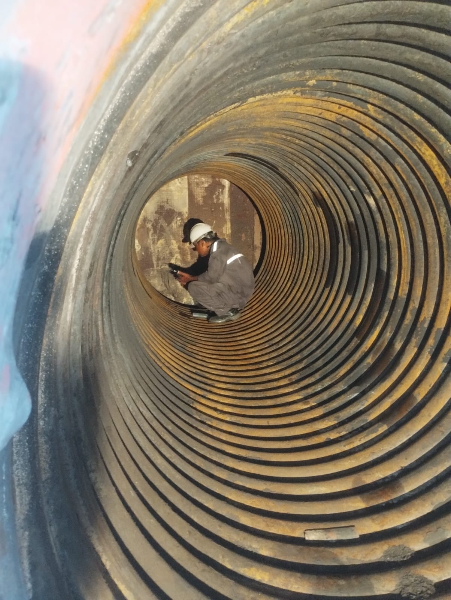

Resources
Our company enrolls highly experienced and qualified technicians.
We recruit personnel who are certified by ISO 9712 and/or ASNT SNT TC-1A with up to more than 20 years of industrial experience.
We maintain an adequate inventory of equipment and accessories including:
- Ultrasonic Flaw detectors
- Ultrasonic Thickness Gauges
- All necessary test probes and accessories
- Calibration and Reference blocks
- Electro-Magnetic Yokes
- Chemicals and consumable materials





Pipeline Thickness Testing

component Dye Penetrant Testing

Boiler End Plate Thickness Testing

Shaft Magnetic Particle Testing

Boiler Tubes Thickness Testing
Turbine Blades Fluorescent Penetrant Testing